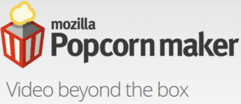
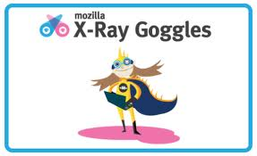

An Accessible Web
Programmme Spéciale
Créer par Manel Rhaiem / @manelbutterfly
À propos de
- lancer par Manel Rhaiem
- enseigner les technologies Web pour les jeunes personnes handicapées
- Utiliser le produit Webmaker pour initier dans les base de web
Webmaker
À propos
- projet lancer par mozilla
- Faire quelque chose d'étonnant avec le web
- Créer une génération de Webmakers
- Facilite L'avenir du Web ensemble
Outils

Thimble
Réaliser et partager vos propre page web
Caractéristique
- Simple Pour créer vos propres pages Web
- Vous permet d'écrire en HTML et CSS codes
- Vous pouvez prévisualiser votre travail, l'héberger et partager instantanément
- Vous aide à vérifier vos erreurs
D'autre Outils
 But du projet
- promouvoir l'effort et l'implication des femmes/filles tunisiennes dans le domaine du libre
- partager les connaissances
- action sociale dans le but d'apprendre le sens de compétitivité aux enfants
- leur procurer le plaisir d'apprendre de nouvelles technologies.